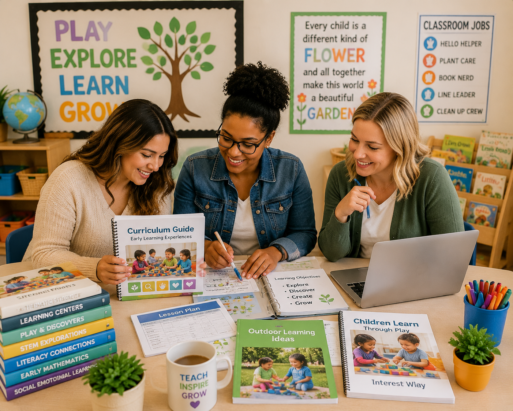
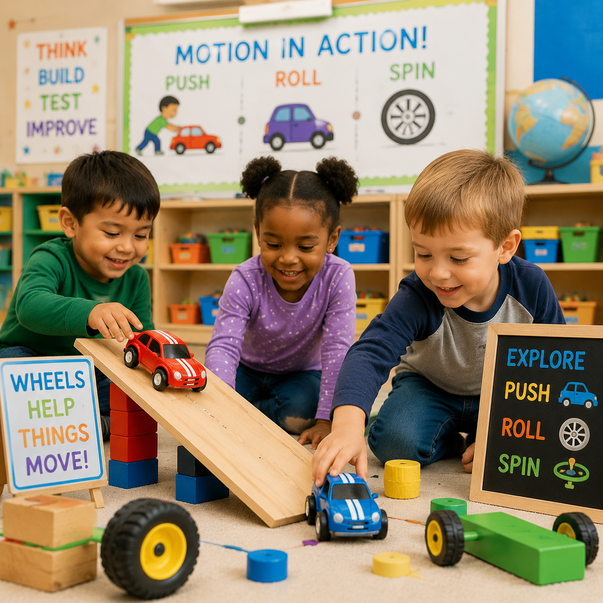
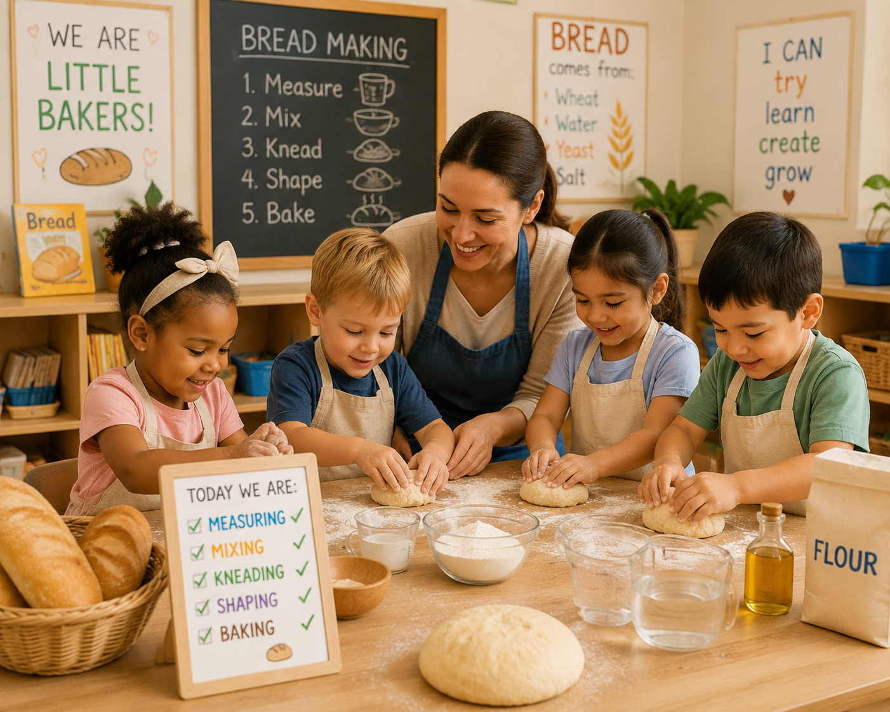
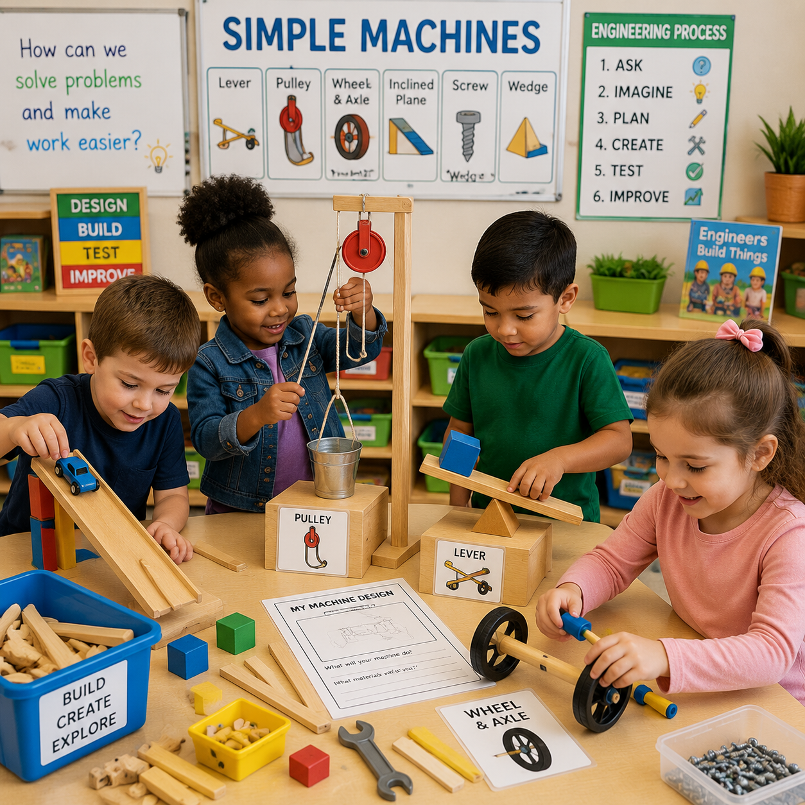
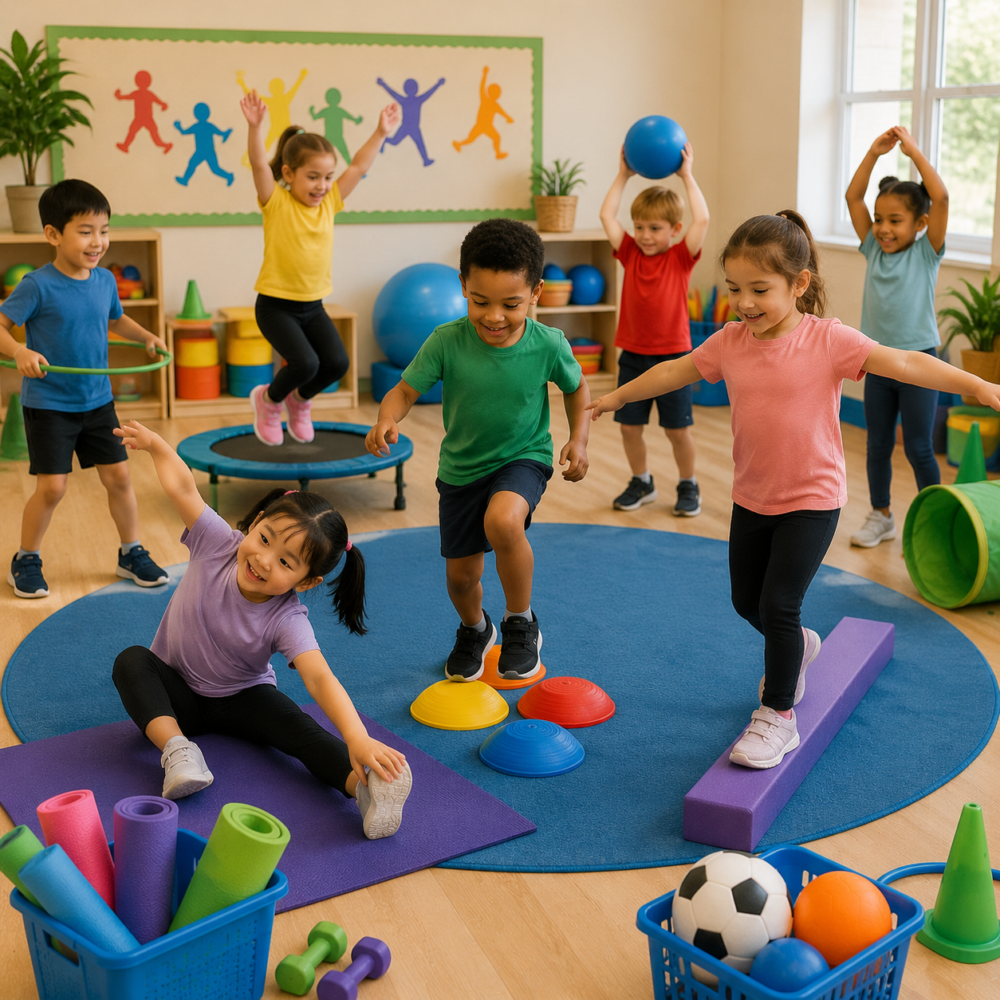

🌱 Gardening Study
Children explore plants, growth, nature, and science through hands-on gardening experiences.
Explore hands-on curriculum studies, teaching guides, learning experiences, and classroom resources designed for Early Head Start, Head Start, Preschool, and Pre-K educators.

The Curriculum Resource Library provides educators with engaging learning experiences that connect children's curiosity with science, STEM, literacy, mathematics, health, creativity, and exploration.
Discover curriculum experiences organized around children's interests, development, and hands-on exploration.
Children investigate the natural world through observation, experiments, exploration, and discovery.
Explore Studies →Children design, build, test, and solve problems through creative engineering challenges.
Explore STEM →Children explore healthy bodies, movement, nutrition, emotions, and wellness habits.
Explore Health →Children learn about nature, sustainability, conservation, and caring for the Earth.
Explore Environment →Children develop vocabulary, communication skills, storytelling, and early literacy through meaningful experiences.
Explore Literacy →Children investigate counting, patterns, measurement, sorting, and problem solving.
Explore Math →Complete hands-on studies designed to support early childhood classrooms.
Children explore plants, growth, nature, and science through hands-on gardening experiences.

Children investigate movement, transportation, wheels, and engineering concepts.

Children transform ordinary boxes into imaginative creations while exploring design.

Children mix, measure, knead, bake, and discover how bread is made.

Children investigate pushes, pulls, tools, and how machines make work easier.

Children move, stretch, balance, and discover healthy movement habits.
Tools designed to support intentional planning, observation, assessment, and meaningful classroom experiences.
Create engaging learning experiences with activity ideas, objectives, materials, and classroom extensions.
Explore Resources →Document children's learning, development, interests, and discoveries through meaningful observations.
View Assessment Tools →Access journals, activity pages, classroom tools, and learning documentation resources.
Browse Printables →Complete curriculum studies built around children's curiosity and real-world experiences.
Connect activities to early learning goals, developmental skills, and classroom outcomes.
Support intentional teaching through documentation and reflection.
Extend learning beyond the classroom through family connections and activities.
Adapt experiences to meet children's individual needs and developmental levels.
Encourage imagination, problem solving, and child-led discovery.

Every classroom is unique. If you do not see the curriculum study you need, a custom study can be created by request based on your classroom interests, learning goals, children's curiosity, and teaching needs.
Curriculum learning continues when children explore, create, and discover with their families.
Families can continue classroom discoveries through simple activities and conversations.
Books, questions, and shared experiences help children build knowledge and vocabulary.
Children's questions and ideas can inspire meaningful learning experiences.